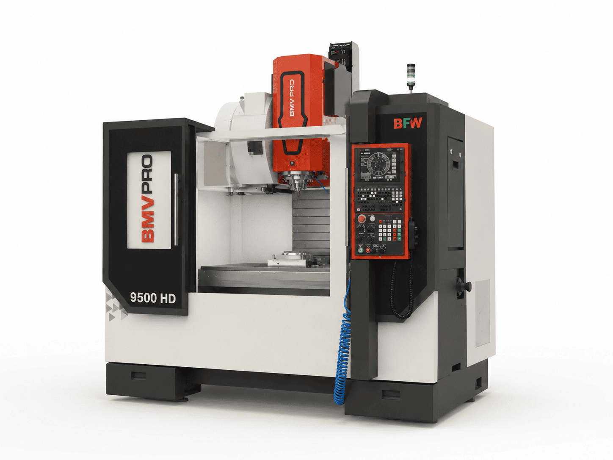

01Our Machines
Advanced machining technology for complex, tight-tolerance work.

Turning Centre
CNC Turning — LMW
DIA 200 × 500 mm (X, Z)CNC turning centres capable of precision turning in a single setup. Ideal for producing complex components with consistent quality across both short and high-volume production runs.

Vertical Machining Centre
VMC Milling — BFW BMV PRO
500 × 500 × 900 mm (X, Y, Z)High-rigidity vertical machining centre for 3-axis milling of prismatic and contoured parts. Superior surface finish and dimensional accuracy for intricate designs and complex geometries.

Turning Centre
CNC Turning - ACE MICROMATIC
DIA 200 × 500 mm (X, Z)Our CNC turning centres combine precision, efficiency, and repeatability to manufacture complex components in a single setup, supporting everything from prototype development to high-volume production.